De la pista al dato,y del dato a la pista.From the court to the data,and back to the court.
Preparador físico (Strength & Conditioning) e investigador predoctoral FPU en la Universidad de Granada. Llevo la evidencia a la pista y las preguntas de la pista al laboratorio.Strength & Conditioning coach and FPU predoctoral researcher at the University of Granada. I take evidence to the court and the court's questions back to the lab.
Soy mejor preparador físico porque investigo, y mejor investigador porque cada semana estoy con deportistas reales. Las dos cosas se alimentan en un ciclo.I am a better coach because I do research, and a better researcher because every week I work with real athletes. Each side feeds the other in a loop.
01 · PISTACOURT
ObservoObserve
En el entrenamiento aparece la duda: ¿esta jugadora llega fatigada?, ¿esta carga es la adecuada?Training raises the question: is this player fatigued? Is this load right?
02 · DATODATA
MidoMeasure
Plataformas de fuerza, encoder, salto CMJ y velocidad de ejecución. Números, no sensaciones.Force plates, encoder, CMJ and bar velocity. Numbers, not hunches.
03 · CIENCIASCIENCE
InvestigoResearch
Contrasto con la literatura y diseño estudios propios en la UGR.I check the literature and run my own studies at the UGR.
04 · DECISIÓNDECISION
AplicoApply
Vuelvo a la pista con una decisión mejor: cargas, volumen y control de la fatiga.Back to the court with a better call on load, volume and fatigue.
La pista pregunta. La ciencia responde.The court asks. Science answers.
De la pista al doctorado, sin salir de la pistaFrom the court to a PhD, without leaving the court
Cinco etapas, tres países y una misma idea: entrenar mejor gracias a la ciencia y hacer ciencia que sirva para entrenar.Five chapters, three countries and one idea: coach better through science, and do science that helps coaching.
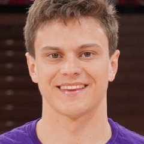
37.18° N · 3.60° O
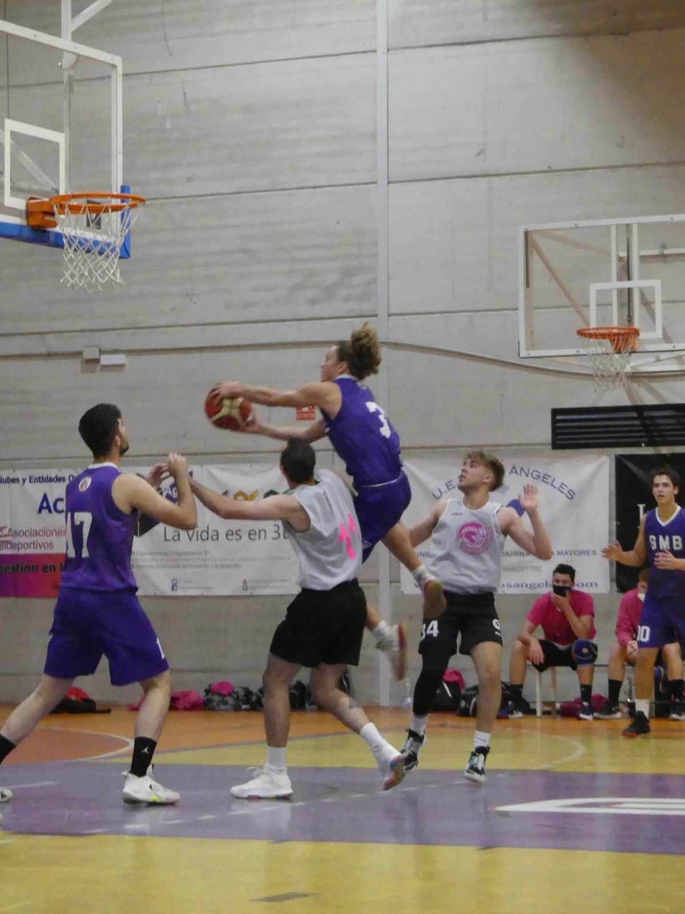
Granada · 2020EntrenandoCoachingHoldat Basketball
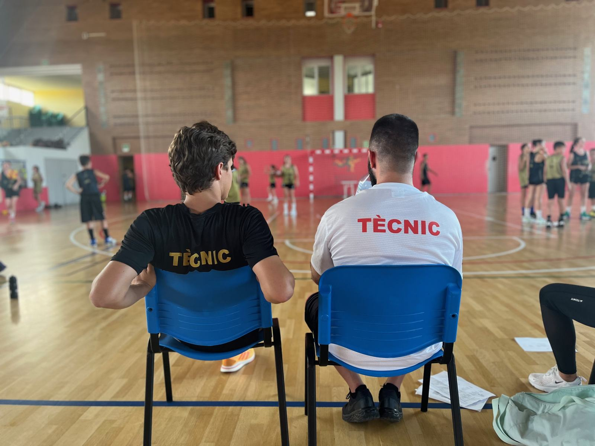
Campus · TrempCamp · Tremp
Scientia Movens
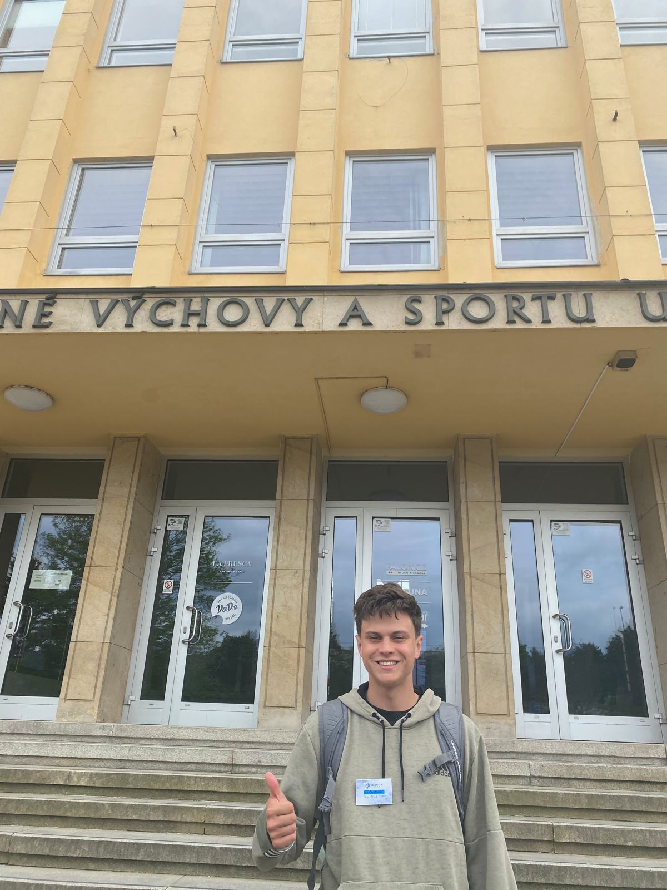
Universidad CarolinaCharles UniversityBergen · RESUPERES
Columbus HS
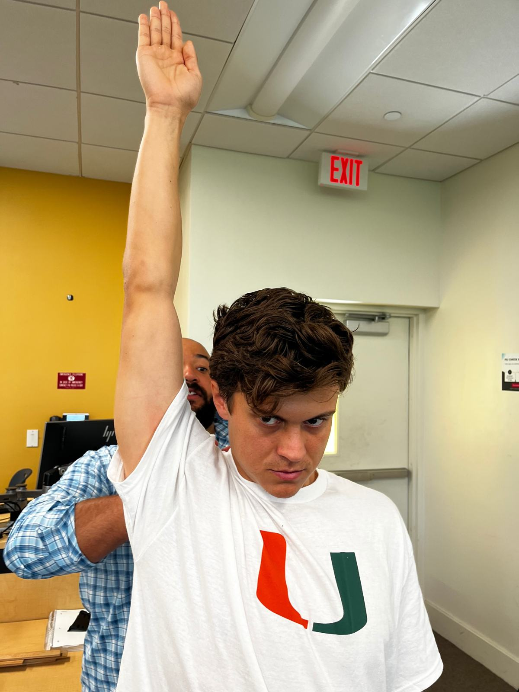
EvaluaciónAssessmentCampus COVAP · 2023
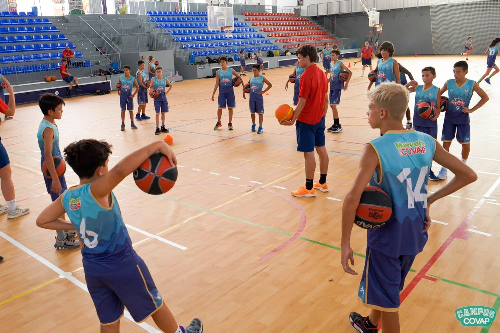
Campus COVAP · 2023
CMJ · control neuromuscularneuromuscular monitoringHeartyBrain · PROFITHLaboratorioLab · 2025Con el equipoWith the team · Tenerife 2025
Almería · 2025GMASB · 2026ASYM · HawkinSan Fernando · 2026
1 / 5
01 · 2020 – 2022 · Granada
Empezar desde el banquilloStarting from the bench
Vengo del baloncesto. Mientras estudiaba Ciencias de la Actividad Física y del Deporte en la UGR saqué el título de entrenador de Nivel I (2020) y empecé a entrenar en Granada más Baloncesto.I come from basketball. While studying Sport Sciences at the University of Granada I earned my Level I coaching licence (2020) and started coaching at Granada más Baloncesto.
En la temporada 2021-22 fui entrenador y preparador físico del Junior A y del Alevín: los dos equipos quedaron subcampeones de la liga de Granada y se clasificaron para el torneo regional. A la vez coordinaba las escuelas de Sierra Nevada, con sus entrenadores, material e instalaciones, y en marzo de 2022 dirigí a la selección sub-10 de Granada en el Campeonato de Andalucía.In 2021-22 I was head coach and S&C coach of the U18 and U12 teams: both finished runners-up in the Granada league and qualified for the regional tournament. I also coordinated the Sierra Nevada school programme, and in March 2022 I led Granada's U10 team at the Andalusian Championship.
En paralelo llegó la investigación: colaboré en un proyecto nacional sobre asimetrías y en 2021 gané el accésit a investigadores noveles de la SIBB con mi primer trabajo sobre asimetrías en saltos horizontales. Los veranos, campus de Holdat Basketball.Research came alongside: I joined a national project on asymmetries, and in 2021 my first study on horizontal-jump asymmetries won the SIBB young researcher award. Summers meant Holdat Basketball camps.
9,19nota media del gradoBSc GPA
2equipos subcampeonesrunner-up teams
SIBBaccésit 2021award 2021
02 · 2022 – 2023 · PragaPrague
Salir fuera y presentar en inglésGoing abroad and presenting in English
Me fui un año becado a la Universidad Carolina de Praga. Allí presenté en el congreso Scientia Movens, con charla y póster en la Facultad de Educación Física y Deporte.I spent a scholarship year at Charles University in Prague, where I presented at the Scientia Movens congress, with a talk and a poster at the Faculty of Physical Education and Sport.
Ese mismo año representé a la UGR en el proyecto europeo Erasmus+ RESUPERES, con estancias formativas en Belgrado, Bergen, Nápoles, Faro y Granada, y dos comunicaciones en la conferencia de Bergen. Aprendí a trabajar con equipos de cinco países y a adaptarme rápido.That same year I represented the UGR in the Erasmus+ RESUPERES project, with training stays in Belgrade, Bergen, Naples, Faro and Granada, and two communications at the Bergen conference. I learned to work with teams from five countries and to adapt fast.
5estancias europeasEuropean stays
2comunicaciones en Bergentalks in Bergen
03 · 2023 – 2024 · Miami
El baloncesto de élite de high schoolElite high-school basketball
El curso siguiente, otra beca: Florida International University, en Miami. Antes, ese verano, entrené en el Campus COVAP y en Holdat.The next year, another scholarship: Florida International University in Miami. Before that, I spent the summer coaching at Campus COVAP and Holdat.
De enero a abril de 2024 fui preparador físico y entrenador ayudante del primer equipo de Christopher Columbus High School. Allí entrené a Cameron Boozer, Gatorade National Player of the Year. Fue mi primera experiencia de preparación física en el baloncesto estadounidense.From January to April 2024 I was S&C coach and assistant coach of Christopher Columbus High School's first team. There I trained Cameron Boozer, Gatorade National Player of the Year. It was my first S&C experience in US basketball.
FIUbeca de movilidadexchange scholarship
Columbus HSene – abr 2024Jan – Apr 2024
04 · 2024 – 2025 · Granada
Volver con datosComing back with data
De vuelta en Granada entré en el grupo PROFITH, en el proyecto HeartyBrain: entrenaba a pacientes cardiacos y analizaba sus datos, con pruebas de esfuerzo y análisis de gases.Back in Granada I joined the PROFITH group on the HeartyBrain project, training cardiac patients and analysing their data, with exercise tests and gas analysis.
En Granada más Baloncesto pasé al primer equipo femenino, en Liga Femenina 2, como preparador físico y entrenador ayudante. Ahí empecé a medir de forma sistemática: CMJ en plataformas de fuerza Hawkin, saltos unilaterales y control de la fatiga a lo largo de la temporada. Hice además los cursos de Assessport sobre evaluación, demandas del baloncesto y ciclo menstrual.At Granada más Baloncesto I moved up to the women's first team in Liga Femenina 2 as S&C and assistant coach. That is where I started measuring systematically: CMJ on Hawkin force plates, single-leg jumps and fatigue monitoring across the season. I also completed Assessport courses on testing, basketball demands and the menstrual cycle.
En 2025 terminé dos másteres en la UGR: Investigación en Actividad Física y Deporte, y Profesorado. Y en el laboratorio empecé a trabajar con encoder lineal, Myoquality y ensayos controlados de fuerza.In 2025 I completed two master's degrees at the UGR: Research in Physical Activity and Sport, and Secondary Teacher Training. In the lab I started working with linear encoders, Myoquality and controlled strength trials.
LF2primer equipo femeninowomen's first team
2másteresmaster's degrees
05 · 2025 – hoytoday · Granada
Doctorado, aulas y pistaPhD, classroom and court
En diciembre de 2025 empecé el doctorado con contrato FPU en el grupo Análisis del Movimiento Humano. Mi tesis compara el 1RM medido con el que se estima a partir de la velocidad cuando hay fatiga.In December 2025 I started my PhD with an FPU contract in the Human Movement Analysis group. My thesis compares measured 1RM with velocity-based estimates under fatigue.
En 2026 llegaron las publicaciones en Sports Medicine – Open y Applied Sciences, y también las clases: doy Biomecánica del Movimiento Humano y Fundamentos de las Habilidades Motrices en el grado de CCAFD.2026 brought papers in Sports Medicine – Open and Applied Sciences, and teaching: I teach Human Movement Biomechanics and Fundamentals of Motor Skills in the Sport Sciences degree.
Y sigo cada semana en la pista con el primer equipo de Granada más Baloncesto, ya en mi cuarta temporada. Lo que pregunto en el laboratorio sale de ahí.And I am still on court every week with Granada más Baloncesto's first team, now in my fourth season. The questions I ask in the lab come from there.
FPUcontrato predoctoralpredoctoral contract
2asignaturascourses taught
4.ªtemporada en LF2season in LF2
EspañolSpanishNATIVONATIVEInglésEnglishC1FrancésFrenchINTERMEDIOINTERMEDIATEItalianoItalianINTERMEDIOINTERMEDIATENCSFCERTIFIED STRENGTH COACHEntrenador de BaloncestoBasketball CoachNIVEL I · FABLEVEL I · FAB
Día a díaDay to day
En la pista y en el laboratorioOn court and in the lab
DeslizaSwipe ⇆
GMASB · Liga Femenina 2GMASB · Liga Femenina 2▶Corrigiendo la sentadillaCoaching the squat
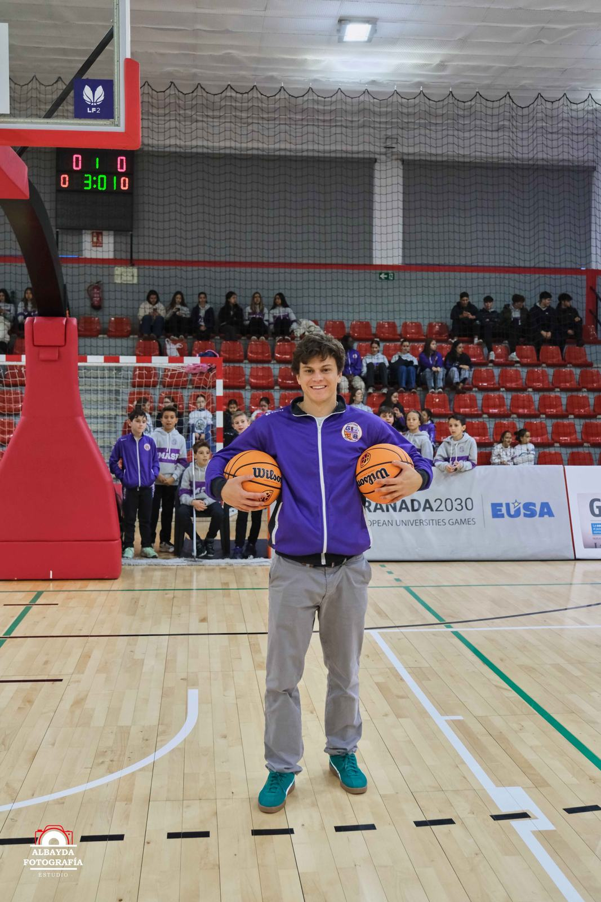
Granada · 2025Granada · 2025▶Test de CMJCMJ testCampus COVAP · 2023COVAP camp · 2023Plataformas de fuerza HawkinHawkin force plates▶Myoquality · fuerza rotacionalMyoquality · rotational strength
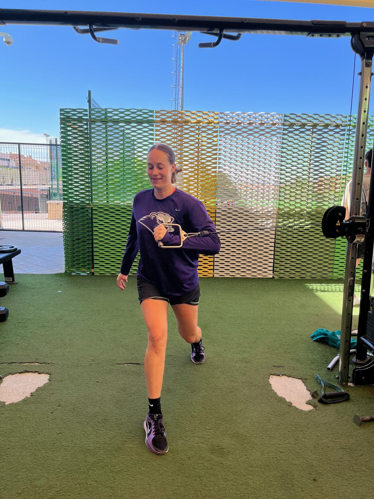
AcondicionamientoConditioning▶Sprints en pistaTrack sprintsCon el equipo · TenerifeWith the team · Tenerife▶PliometríaPlyometricsLaboratorio · 2025Lab · 2025▶Físico integrado con balónConditioning with the ballColumbus HS · MiamiColumbus HS · Miami
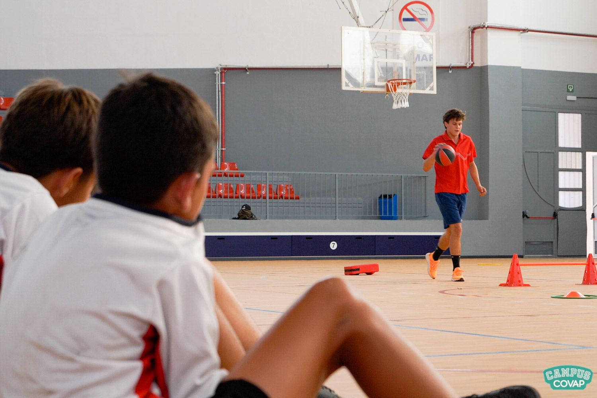
Campus COVAP · 2023COVAP camp · 2023▶Ambiente de equipoTeam spiritSan Fernando · 2026San Fernando · 2026▶Activación en un desplazamientoActivation on an away trip
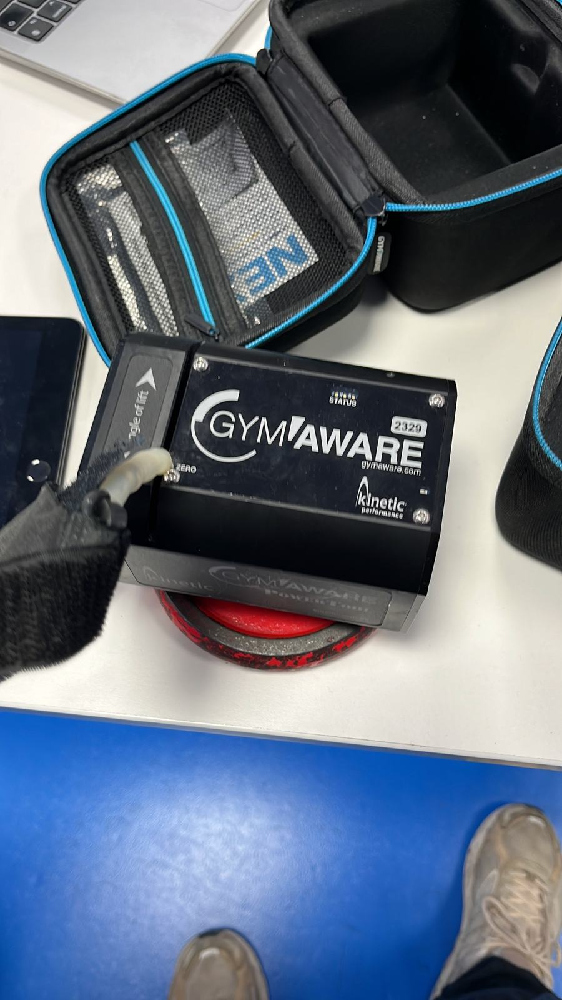
Encoder GymAwareGymAware encoder▶Sentadilla con VBTSquat with VBTVuelta a la calmaCool-down▶Fuerza a una piernaSingle-leg strength
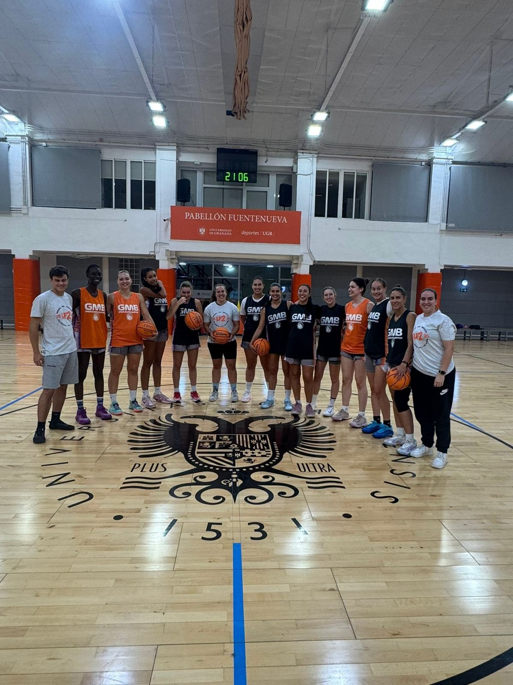
Pabellón FuentenuevaFuentenueva arena▶Activación junto al marSeaside activation
HerramientasToolkit
Lo que midoWhat I measure
Uso a diario la tecnología del laboratorio con deportistas reales, y sé cuándo un dato sirve para decidir y cuándo no.I use lab technology with real athletes every week, and I know when a number is good enough to act on and when it isn't.
Mi tesis estudia cuánto se parece el 1RM estimado con la velocidad al 1RM medido, también con fatiga.My PhD tests how closely velocity-estimated 1RM matches directly measured 1RM, including under fatigue.
Plataformas de fuerzaForce plates
Hawkin Dynamics
CMJ, asimetrías y control neuromuscular de la plantilla en Liga Femenina 2.CMJ, asymmetries and neuromuscular monitoring of a Liga Femenina 2 squad.
Evaluación y entrenamiento de fuerza con polea electromecánica, también en gestos rotacionales y multidireccionales.Strength testing and training with an electromechanical pulley, including rotational and multidirectional movements.
LaboratorioLab
Ensayos controladosControlled trials
Estudios aleatorizados de fuerza, como el de suplementación con nitrato publicado en 2026.Randomised strength studies, such as the dietary nitrate trial published in 2026.
FisiologíaPhysiology
Análisis de gases · cintaGas analysis · treadmill
Pruebas de esfuerzo con pacientes cardiacos en el proyecto HeartyBrain (PROFITH).Exercise testing with cardiac patients in the HeartyBrain project (PROFITH).
NIRS · saltojumps
MOXY · CMJ
Oxigenación muscular con MOXY y saltos verticales y horizontales para medir asimetrías.Muscle oxygenation with MOXY, plus vertical and horizontal jumps to measure asymmetries.
Investigación y docenciaResearch & teaching
Ciencia que baja a la pistaScience that reaches the court
Doctorando FPU en Biomedicina en la UGR, grupo Análisis del Movimiento Humano (CTS-362). Mi tesis compara el 1RM medido directamente con el estimado por velocidad bajo fatiga de tren inferior, de tren superior y aeróbica, para que prescribir cargas con VBT sea más fiable en el entrenamiento real.FPU PhD candidate in Biomedicine at the University of Granada, Human Movement Analysis group (CTS-362). My thesis compares directly measured 1RM with velocity-based estimates under lower-body, upper-body and aerobic fatigue, to make VBT load prescription more robust in real training.
Scientia Movens · Praga 2023Almería · 2025
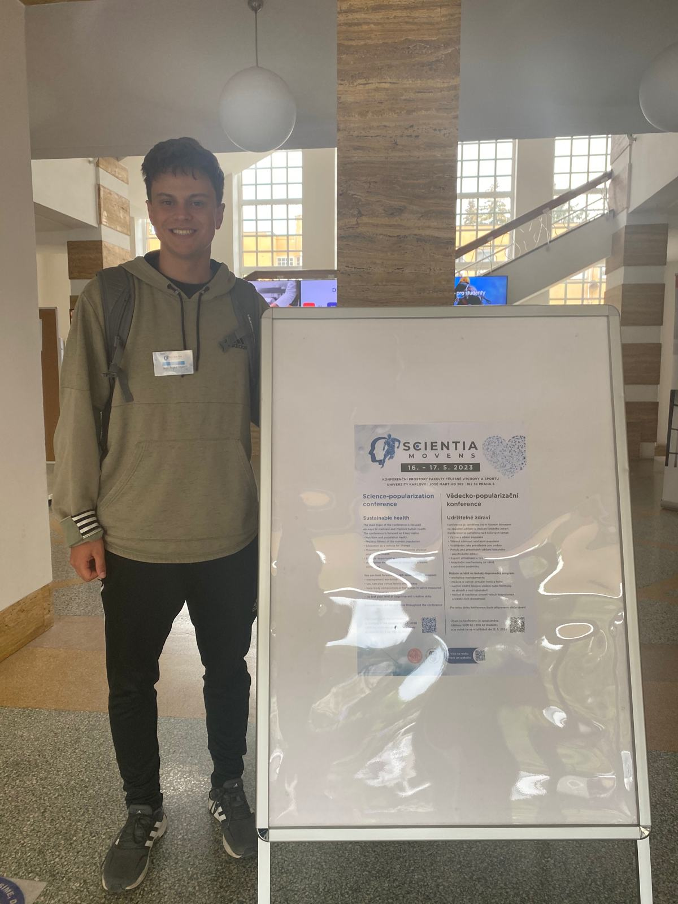
PósterPoster · Praga
Publicaciones destacadasSelected publications10 en totalin total
SM
Publicado enPublished inSports Medicine – Open2026
Are asymmetry-focused training interventions more effective than general programs in reducing interlimb asymmetries and improving athletic performance? A systematic review
Revisión sistemática sobre si entrenar específicamente las asimetrías funciona mejor que un programa general.Systematic review on whether training asymmetries specifically works better than a general programme.
Acute and chronic effects of dietary nitrate supplementation on resistance exercise performance in young men: a randomized, triple-blind, placebo-controlled crossover study
Ensayo aleatorizado, triple ciego y cruzado sobre el nitrato dietético y el rendimiento en fuerza.Randomised, triple-blind crossover trial on dietary nitrate and strength performance.
Limited applicability of MOXY-derived muscle oxygenation for monitoring upper-body strength training
Fiabilidad de la oxigenación muscular medida con MOXY en el entrenamiento de fuerza del tren superior.Reliability of MOXY muscle oxygenation for monitoring upper-body strength training.
Asymmetry in force production between unilateral and bilateral standing broad jumps in young senior amateur basketball players
Asimetrías de fuerza en saltos horizontales en jugadores de baloncesto. Accésit SIBB 2021.Force asymmetries in horizontal jumps in basketball players. SIBB 2021 young researcher award.
Las citas se actualizan en directo desde OpenAlex.Citation counts update live from OpenAlex.Más publicaciones en Retos, SPORT TK, actas de congreso y un capítulo de libro.More papers in Retos, SPORT TK, conference proceedings and a book chapter.Google Scholar ↗
Docencia · UGRTeaching · UGR
Biomecánica del Movimiento HumanoHuman Movement BiomechanicsFundamentos de las Habilidades MotricesFundamentals of Motor Skills
Grado en Ciencias de la Actividad Física y del DeporteBSc in Physical Activity and Sport Sciences
LíneasInterests
Velocity-Based TrainingRelación fuerza-velocidadForce–velocityFatiga neuromuscularNeuromuscular fatigueCMJAsimetríasAsymmetriesNitrato dietéticoDietary nitrateDeporte femeninoWomen's sport
Premios, proyectos y congresosAwards, projects & congresses
2021Accésit a investigadores noveles, 43.º Congreso de la Sociedad Ibérica de Biomecánica y Biomateriales (SIBB).Young researcher award (accésit), 43rd Congress of the Iberian Society of Biomechanics and Biomaterials (SIBB).
EUBecario en Erasmus+ KA220 RESUPERES (2022–2025), con estancias en Belgrado, Bergen, Nápoles, Faro y Granada.Fellow in Erasmus+ KA220 RESUPERES (2022–2025), with stays in Belgrade, Bergen, Naples, Faro and Granada.
I+DColaborador en el proyecto nacional PID2019-110074GB-I00 sobre asimetrías y composición corporal (2020–2024).Collaborator in national project PID2019-110074GB-I00 on asymmetries and body composition (2020–2024).
7Comunicaciones en congresos: SIBB (Oporto), INNTED (Sevilla), Bergen, Granada y Scientia Movens (Praga).Conference communications: SIBB (Porto), INNTED (Seville), Bergen, Granada and Scientia Movens (Prague).
2022Comité organizador del I Congreso Internacional sobre Optimización del Entrenamiento de Fuerza (UGR).Organising committee, 1st International Congress on Strength Training Optimisation (UGR).
Casos de investigaciónResearch cases
Preguntas de pista, respuestas con métodoCourt questions, answered with method
Cada estudio empieza con una duda práctica. Toca cada fase para ver qué implica.Every study starts with a practical question. Tap each stage to see what it involves.
¿Se puede estimar bien el 1RM con la velocidad de la barra cuando el deportista llega fatigado?Can 1RM be estimated accurately from bar velocity when the athlete is fatigued?
Por qué importaWhy it matters
El VBT se usa cada vez más para prescribir cargas sin hacer un test de 1RM, pero en la vida real se entrena cansado. Si la estimación falla con fatiga, la carga prescrita también falla.VBT is increasingly used to prescribe loads without a 1RM test, but in real life people train tired. If the estimate fails under fatigue, so does the prescribed load.
Qué hagoWhat I do
Comparo el 1RM medido directamente con el estimado a partir de la velocidad, tras fatiga de tren inferior, de tren superior y aeróbica.I compare directly measured 1RM with velocity-based estimates after lower-body, upper-body and aerobic fatigue.
En qué punto estáWhere it stands
Doctorado iniciado en diciembre de 2025 con contrato FPU, en el grupo Análisis del Movimiento Humano (CTS-362).PhD started in December 2025 with an FPU contract, in the Human Movement Analysis group (CTS-362).
Protocolos de fatiga de tren inferior, de tren superior y aeróbica.Lower-body, upper-body and aerobic fatigue protocols.
Medición directa de la repetición máxima como referencia.Direct measurement of the one-repetition maximum as the reference.
Estimación del 1RM a partir de la relación carga-velocidad.1RM estimated from the load–velocity relationship.
Grado de acuerdo entre el valor medido y el estimado en cada condición.Agreement between measured and estimated values in each condition.
Recomendaciones para prescribir cargas con VBT en entrenamientos reales.Recommendations for VBT load prescription in real training.
02
● Publicado · 2026Published · 2026Primer autor · Applied SciencesFirst author · Applied Sciences · DOI ↗
¿Mejora el nitrato dietético el rendimiento en el entrenamiento de fuerza?Does dietary nitrate improve resistance-training performance?
Por qué importaWhy it matters
El nitrato tiene efectos ergogénicos en resistencia, pero en fuerza la evidencia no era clara.Nitrate has ergogenic effects in endurance, but the evidence in strength was unclear.
Qué hagoWhat I do
Un ensayo aleatorizado, triple ciego, controlado con placebo y cruzado en hombres jóvenes, con efectos agudos y crónicos.A randomised, triple-blind, placebo-controlled crossover trial in young men, looking at acute and chronic effects.
En qué punto estáWhere it stands
Publicado en Applied Sciences en 2026.Published in Applied Sciences in 2026.
Aleatorizado y cruzado: cada participante pasa por las dos condiciones.Randomised crossover: every participant goes through both conditions.
Ni participantes, ni evaluadores, ni analistas sabían qué tomaba cada uno.Neither participants, assessors nor analysts knew who took what.
Nitrato dietético frente a placebo, en toma aguda y crónica.Dietary nitrate versus placebo, acute and chronic intake.
Pruebas de rendimiento en ejercicios de fuerza.Performance tests in resistance exercises.
Artículo publicado en Applied Sciences (2026).Paper published in Applied Sciences (2026).
03
● Publicado · 2026Published · 2026Coautor · Sports Medicine – OpenCo-author · Sports Medicine – Open · DOI ↗
¿Entrenar específicamente las asimetrías funciona mejor que un programa general?Does training asymmetries specifically work better than a general programme?
Por qué importaWhy it matters
Las asimetrías entre piernas se han relacionado con más riesgo de lesión y peor rendimiento, y cada vez hay más programas dirigidos a reducirlas.Interlimb asymmetries have been linked to higher injury risk and lower performance, and more and more programmes target them.
Qué hagoWhat I do
Una revisión sistemática que compara intervenciones centradas en asimetrías con programas generales.A systematic review comparing asymmetry-focused interventions with general programmes.
En qué punto estáWhere it stands
Publicado en Sports Medicine – Open en 2026.Published in Sports Medicine – Open in 2026.
Búsqueda sistemática en bases de datos científicas.Systematic search in scientific databases.
Selección de estudios según criterios definidos de antemano.Study selection against pre-defined criteria.
Recogida de datos de asimetrías y de rendimiento de cada estudio.Asymmetry and performance data extracted from each study.
Comparación entre intervenciones específicas y programas generales.Comparison of specific interventions with general programmes.
Artículo publicado en Sports Medicine – Open (2026).Paper published in Sports Medicine – Open (2026).
About me
Fuera de la pista, también en movimientoOff the court, still moving
Me encanta el deporte en cualquier formato. Nieve, agua, montaña: si hay una tabla, unos esquís o una cima cerca, me apunto. Viajar y vivir fuera me ha enseñado a adaptarme rápido y a disfrutar del camino.I love sport in any form. Snow, water, mountains: if there's a board, a pair of skis or a summit nearby, I'm in. Travelling and living abroad taught me to adapt fast and enjoy the ride.
ContactoContact
¿Hablamos de rendimiento?Let's talk performance
Clubes, grupos de investigación o deportistas: escríbeme y te respondo.Clubs, research groups or athletes: drop me a line and I'll get back to you.